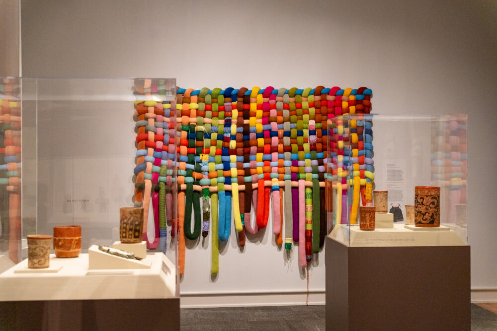

Visitor Information
The Mint Museum Campuses and Visitor Experience
- The Mint Museum is one of North Carolina's oldest and most respected art museums, distinguished by its two unique campuses that together offer a broad and immersive cultural experience:
- Mint Museum Uptown — Located in the heart of Charlotte’s vibrant arts district, this modern campus focuses on contemporary art, craft, and design. It features rotating exhibitions, innovative installations, and works that highlight global artistic trends and modern creativity. Its central location places it near theaters, performance spaces, restaurants, and public gathering areas, making it a key cultural destination in the city.
- Mint Museum Randolph — Housed in the historic former U.S. Mint building, this campus emphasizes classical art, decorative arts, and historical collections. Surrounded by landscaped grounds and mature trees, it offers a quieter, more traditional museum atmosphere and highlights the institution’s origins, architectural heritage, and early collections.
- Two-Campus Variety — Each location offers a distinct experience, allowing visitors to explore both modern innovation and historical tradition within a single museum system.
- General Admission Access — A single general admission ticket allows visitors to explore both campuses over two consecutive days, making it easy to plan visits at a comfortable pace.
- Special Exhibitions — Both locations regularly host temporary and traveling exhibitions, meaning repeat visits often offer something new to experience.
- Guided Tours and Programs — Visitors can participate in docent-led tours, lectures, workshops, and family-oriented activities designed to deepen understanding and engagement with the art on display.
- Student and Family Friendly — The museum offers programs and resources tailored to students, educators, and families, making it an ideal destination for school trips and group visits.
- Accessibility Services — The Mint Museum is committed to accessibility, providing accommodations and resources to ensure that visitors of all abilities can enjoy the museum experience.
- Museum Shops and Amenities — Each campus includes visitor amenities such as museum shops and comfortable public spaces that enhance the overall visit.
- Community Engagement — Through events, partnerships, and public programming, the Mint Museum actively connects with the Charlotte community and welcomes visitors from across the region.


Locations & Hours:
Mint Museum Uptown:
- Address: Levine Center for the Arts, 500 South Tryon Street, Charlotte, NC 28202
- Phone: 704-337-2000
| Day |
Hours |
| Sunday |
1:00 PM - 5:00 PM |
| Monday |
Closed |
| Tuesday |
11:00 AM - 6:00 PM |
| Wednesday |
11:00 AM - 9:00 PM |
| Thursday |
11:00 AM - 6:00 PM |
| Friday |
11:00 AM - 9:00 PM |
| Saturday |
10:00 AM - 6:00 PM |
Mint Museum Randolph:
- Address: 2730 Randolph Road, Charlotte, NC 28207
- Phone: 704-337-2000
| Day |
Hours |
| Sunday |
1:00 PM - 5:00 PM |
| Monday |
Closed |
| Tuesday |
11:00 AM - 6:00 PM |
| Wednesday |
11:00 AM - 9:00 PM |
| Thursday |
11:00 AM - 6:00 PM |
| Friday |
11:00 AM - 6:00 PM |
| Saturday |
10:00 AM - 6:00 PM |